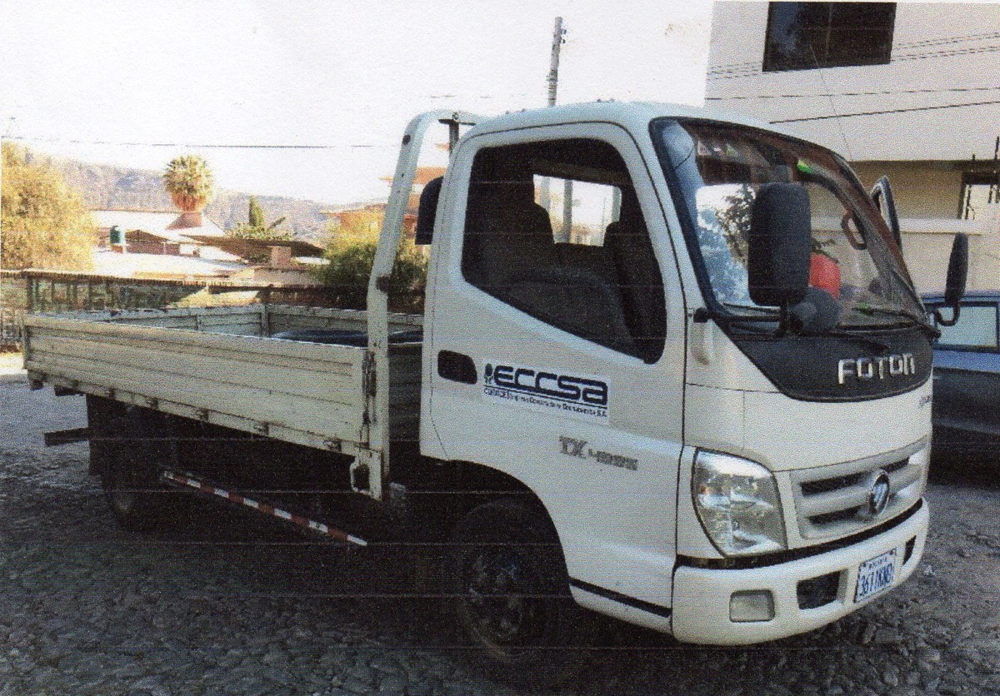

CISTERNA MITSUBISHI
MOD. CANTER, 1246-FBX
COD. 10500013
- 3/9/2019 Cambio de baterias, proximo cambio de aceite a 207393 Km
- 30/9/2020 Engrasado de juntas y Mtto. preventivo
- Equipo operable actualmente en Proyecto Aducciones tramo 2

FURGON MITSUBISHI
MOD. CANTER, 1245-TGU
COD. 10500014
- 21/3/2020 Reparación de motor de arranque
- Próximo cambio de aceite a los 669409 Km.
- 28/9/2020 Pedido pendiente de baterias y llantas
- 22/10/2020 Vehículo ingresa a Mantenimiento
- 29/10/2020 Pedidos pendientes de repuestos para motor y reparación de bomba inyectora
- 12/12/2020 Equipo en reparación en taller de Mtto.
CISTERNA INTERNATIONAL
MOD. LOADSTAR, 685-CSX
COD. 10500017
- 9/3/2020 Revisión de alternador, fallo eléctrico en equipo
- 11/3/2020 Traslado de equipo de obra drogodependientes a taller
- Equipo en reparación en taller de Mtto.

CAMION FOTON
MOD. AUMARK, 3611-KND
COD. 10500019
- 26/6/2020 Limpieza de filtro de aire y cambio de bateria
- 26/6/2020 Equipo operable en obra Drogodependientes
- 15/7/2020 Cambio de Inyectores y jaladores
- 12/12/2020 Próximo cambio de aceite a los 75491 Km.
- 12/12/2020 Equipo operable en proyecto Coronilla
VOLQUETA FOTON
MOD. AUMAN, 3611-KPG
COD. 10500020
- 29/5/2020 Reparación de frenos y ajustes varios
- 2/6/2020 Próximo cambio de aceite a los 90693 Km.
- 3/6/2020 Equipo operable en proyecto Aducciones tramo #2
- 23/6/2020 Reparación de llanta trasera frenada y barra estabilizadora
- Equipo operable, actualmente en proyecto Drogodependientes

MIXER HOWO
MOD. 340HP, 3618-KFT
COD. 10500021A
- 7/2/2020 Cambio de manija de control, turbo y stop
- 4/3/2020 Revisión de reten y rodamientos de trompo
- 12/12/2020 Equipo en reparación en taller de Mtto

MIXER HOWO
MOD. 340HP, 3618-KCG
COD. 10500021B
- 11/3/2020 Reparación de rodamientos de tambor
- 22/9/2020 Mantenimiento preventivo
- 2/10/2020 Proximo cambio de aceite a 52249 Km.
- 6/10/2020 Reparación de bandeja de descarga y engrasado
- 10/12/2020 Engrasado y revisión de amortiguadores
- 12/12/2020 Equipo operable en apoyo a Coboce Hormigón
CISTERNA HINO
MOD. GH1726, 3800-LTG
COD. 10500022
- 19/12/2019 Reparación de Inyectores, tanque y tubo de regadera
- 19/12/2019 Pedido pendiente de Stops
- 12/12/2020 Equipo operable en proyecto Drogodependientes
TRACTO INTERNATIONAL
MOD. 7600SBA, 4016-TEG
COD. 10500025
- 1/6/2020 Pedido pendiente de Globos de suspensión
- 4/3/2020 Ajuste de frenos engrase de muñones y ajustes varios
- 1/9/2020 Pedido pendiente de filtros y refrigerante
- 13/10/2020 Proximo cambio de aceite a los 212944 Km.
- 12/12/2020 Equipo operable actualmente en proyecto ex-Cordeco

SEMIREMOLQUE
MOD. LOWBOY
COD. 10500026
- 12/9/2020 Austes generales para salida con carga
- 13/10/2020 Reparación y soldadura de ganchos de amarre de carga
- 31/10/2020 Equipo operable para traslado, actualmente en Proyecto ex-Cordeco.

CISTERNA UD
MOD. QUON, 4444-ABH
COD. 10500031
- 8/2/2020 Reparación de disco de embrague, reparación de prensa
- 15/2/2020 Proximo cambio de aceite a los 30566 Km.
- 12/12/2020 Equipo operable actualmente en apoyo Coboce Hormigón y obras Eccsa.

VOLQUETA UD
MOD. QUON, 4561-DDU
COD. 10500035
- 19/2/2020 Pedido pendiente de filtro de aire primerio, secundario y llantas
- 25/6/2020 Pedido pendiente de llantas
- 1/10/2020 Próximo cambio de aceite a los 94815 Km.
- 12/12/2020 Equipo operable en proyecto Coronilla

VOLQUETA UD
MOD. QUON, 4561-DEA
COD. 10500036
- 19/2/2020 Pedido pendiente de filtro de aire primario, secundario y llantas
- 25/6/2020 Pedido pendiente de filtro de aire primario, secundario y llantas
- 1/9/2020 Mantenimiento preventivo y engrasado Gral.
- 1/9/2020 Próximo cambio de aceite a los 56637 Km.
- 1/10/2020 Pedido pendiente de embrague y reparación de prensa y volante de inercia.
- 12/10/2020 Equipo operable en desmovilización proyecto Aducciones tramo 1.
- 31/10/2020 Equipo operable en proyecto Aducciones tramo 2.